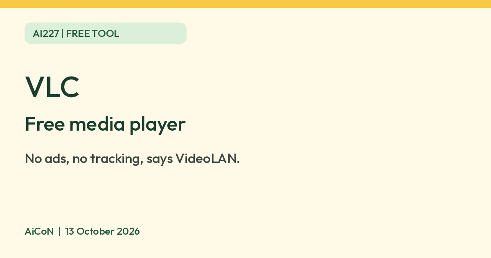

VLC media player: free, no ads, from a non-profit
VideoLAN says VLC media player is completely free, with no spyware, no ads and no user tracking. We checked its Windows page and legal page, not other devices.

Official VLC cone
What it is
VLC media player is a video and audio player from VideoLAN, a French non-profit. VideoLAN's page describes it as "a free and open source cross-platform multimedia player and framework that plays most multimedia files as well as DVDs, Audio CDs, VCDs, and various streaming protocols". It is not an AI tool. We included it because it is a free tool from an official source.
Is it free?
Yes. VideoLAN's VLC page says "Completely Free - no spyware, no ads and no user tracking." VideoLAN's legal page says there are no usage restrictions on its software, "short answer: there are none", for personal, educational or other use within the law. We found no paid tier on the pages we read.
Which devices
- The VLC page says it runs on Windows, Linux, Mac OS X, Unix, iOS and Android. We checked the Windows download page only. It lists version 3.0.23 at 38 MB, and says VLC runs on Windows XP SP3 up to Windows 11.
- VideoLAN says VLC plays most codecs with no codec packs needed. We did not test playback of any file.
- We did not read the Mac, iPhone or Android download pages. Check the page for your device on videolan.org.
India
- We found no India-specific statement or age limit on the pages we read. VideoLAN's website lists Hindi, Tamil, Telugu, Marathi, Kannada and other language choices. This does not verify app-interface support or availability in India.
- AiCoN advice: download only from videolan.org or your phone's official app store.
Privacy and data
- VideoLAN says VLC has no spyware, no ads and no user tracking.
- We did not read a separate privacy policy for the apps, so we cannot say more than VideoLAN's own claim. Treat it as the vendor's statement, not our test result.
Frequently asked questions
Is VLC free?
Yes. VideoLAN says it is completely free, with no spyware, no ads and no user tracking.
Does it need codec packs?
VideoLAN says no codec packs are needed for most formats. We did not test this.
Is it AI?
No. It is a free media player. We included it because it is a free tool from an official source.
How to start
- Open the official VLC page and choose your device. Check its current version and system requirements.
- Download from VideoLAN or the official store linked for your device. Avoid look-alike sites or offers that ask you to pay for VLC.
- Install it and open a local media file. Playback was not tested by AiCoN, so check the files and features you need yourself.
What changed since this post?
VLC, Windows download, legal and logo-permission pages rechecked on 13 October 2026. Windows still lists 3.0.23 at 38 MB. Free/no ads/no tracking remain VideoLAN's claims, not AiCoN test results. Other platform download pages and separate app privacy policies were not read, and India availability remains unverified. Website language choices do not establish app-language support.
Sources: VLC media player, VLC for Windows, VideoLAN legal, VideoLAN organisation, Logo permission, VideoLAN FAQ. Checked 13 October 2026.